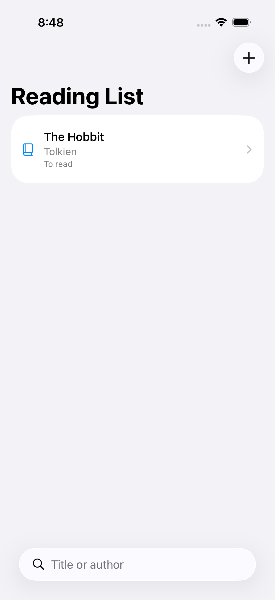

A screenshot answers a visual question about one state on one device. Pair it with an acceptance criterion and a reproducible route to that state, rather than treating any image as completion.
- 1Choose state
- 2Navigate deterministically
- 3Capture screen
- 4Compare criterion
Work through the example
Name an empty, loading and content state. Record what each screenshot can show and what needs a behavioral or accessibility test.
Start with a disposable branch and synthetic data. Write the expected outcome before changing the implementation, then keep the first failing result. This prevents a later repair from quietly redefining the task. The procedure below is grounded in the repository reference; its examples must still be checked against your project and installed toolchain.
Implementation reference
The following focused section is adapted from the maintained project guide. It preserves the source’s examples and limitations.
Visual Review Checklist
| Area | Questions |
|---|---|
| Hierarchy | Is the primary action obvious within two seconds? Does visual weight match importance? |
| Spacing | Are margins, gutters, and component gaps consistent with tokens? |
| Typography | Does the screen use Dynamic Type and avoid fixed font sizes? |
| Color | Does contrast pass, and do semantic roles survive dark mode? |
| Motion | Does animation clarify state, avoid fighting layout, and honor Reduce Motion? |
| Haptics | Are haptics tied to meaningful state transitions, not decoration? |
| Accessibility | Are labels, traits, focus order, tap targets, and content size tested? |
| Runtime | Does the captured screenshot/video prove the actual app state? |
Acceptance and failure review
| Checkpoint | What to inspect | If it does not match |
|---|---|---|
| Choose state | Confirm the input and environment | Preserve the failure and return to this step |
| Navigate deterministically | Inspect the intermediate artifact | Preserve the failure and return to this step |
| Capture screen | Run the focused check | Preserve the failure and return to this step |
| Compare criterion | Record the observed result | Preserve the failure and return to this step |
Ask the agent to explain the smallest change that resolves the observed mismatch. Keep unrelated refactors out of the repair. A change that makes a warning disappear is not enough if the behavior or ownership contract has changed. Re-run the same acceptance check so the before and after results are comparable.
Evidence and limits
The baseline screenshot proves an empty screen was visible; it does not prove persistence or VoiceOver navigation.
This is an educational guide. Its presence in the series does not certify a completed client-specific lab. The series evidence record separates executed checks from exercises and blocked environments.
Inspect the source used in this lesson.
Recorded sample check
On Xcode 26.6 with an iOS 26.5 simulator, the Reading List verification script passed 3 unit tests and 2 UI tests. It exported six screenshots. This image is one of those outputs, not an AI-generated mockup. The sample uses JSON persistence and does not establish all-client app generation or a complete accessibility audit.

Related reading
- Five checks for an AI-built SwiftUI app
Use persistence, search and accessible states to make “it works” a testable claim.
- Muse Code: what our integration actually verifies
Discovery and hooks are useful milestones, but they are not a finished app.
What to do next
Next: Reviewing agent output before you commit: a focused checklist